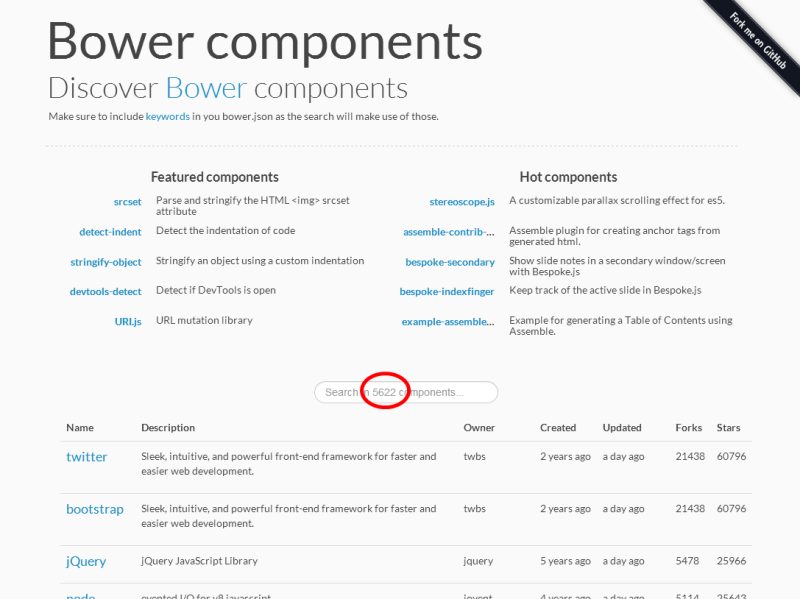

GruntJS, NodeJS, Bower, Sass, AngularJS and Yeoman
By Edouard Ouin, David Jimenez Calvo, Sinikka Schroter And Steve Ben Ezra
available at https://github.com/eouin/evaluation.gruntjs.nodejs.bower.git
What is NodeJS?
Node.js is a way of running JavaScript on the server.
Node.js is a platform built on Chrome's JavaScript runtime for easily building fast, scalable network applications. Node.js uses an event-driven, non-blocking I/O model that makes it lightweight and efficient, perfect for data-intensive real-time applications that run across distributed devices.
Server side.
- Javascript
- V8: High Performance Javascript engine
- Single threaded
- Asynchronous, Event Based
- Event callbacks
So why are async and events good?
- Easier to write
- Scale better
- Lower memory, CPU overhead
Rapid prototyping, rapid development
- RESTful services with no effort
- No-fuss, native JSON handling
- Great package management - NPM
Community modules - NPM

Private NPM registry
- Simply replicate the NPM CouchDB
- Publish packages to private or public NPM registry
- Tutorial: npmjs.org never goes down
Interesting projects
-
Express
- Minimal web application framework
- Additional features are provided as modules or middleware: template engines, models, authentication and authorization, etc ...
-
Meteor
- Next-gen framework for real-time collaborative web applications
- Live page updates
- Support for offline databases with subsequent synchronization
-
Socket.io
- Provides support for server-initiated push events using WebSockets, Ajax polling, iframe, JSONP or Flash based channels
- Transparent for both clients and server
- Can run standalone or integrated with Express
When to use NodeJS
- REST+JSON APIs
- Backend for single-page web app (same language in client and server)
- Real-time web apps with Socket.io and Meteor
- Quick prototyping
When NOT to use NodeJS
- CPU-bound tasks
- Multi-threaded applications
- Applications that have to process large amounts of data
Anybody using it?
How Paypal Is Being Revolutionized By Node.js And Lean-ux
What is GruntJS?
A Script Runner
It's like a build tool, but different. Build systems have been around for ages.
make, ant, rake, jake, cake, maven, etc.
Setup
- Download and install node.js from http://nodejs.org
- $ npm install -g grunt-cli
2 important Files:
- package.json
- Gruntfile.js
package.json
{
"name": "evaluation.gruntjs.nodejs.bower",
"version": "0.0.1",
"description": "Introduction to GruntJS, Bower and NodeJS",
"author": {
"name": "Edouard Ouin",
"email": "edouard@ouin.org",
"web": "http://www.ouin.org"
},
},
"devDependencies": {
}
}
https://npmjs.org/doc/json.html
{
"name": "evaluation.gruntjs.nodejs.bower",
"version": "0.0.1",
"description": "Introduction to GruntJS, Bower and NodeJS",
"author": {
"name": "Edouard Ouin",
"email": "edouard@ouin.org",
"web": "http://www.ouin.org"
},
},
"devDependencies": {
}
}
Gives you
- Variables you can use in your script i.e. version and name
- DevDependencies that allow you to quickly install all required npm modules
Install Grunt
$ npm install grunt --save-dev
package.json
{
"name": "evaluation.gruntjs.nodejs.bower",
"version": "0.0.1",
"description": "Introduction to GruntJS, Bower and NodeJS",
"author": {
"name": "Edouard Ouin",
"email": "edouard@ouin.org",
"web": "http://www.ouin.org"
},
},
"devDependencies": {
"grunt": "~0.4.0"
}
}
https://npmjs.org/doc/json.html
{
"name": "evaluation.gruntjs.nodejs.bower",
"version": "0.0.1",
"description": "Introduction to GruntJS, Bower and NodeJS",
"author": {
"name": "Edouard Ouin",
"email": "edouard@ouin.org",
"web": "http://www.ouin.org"
},
},
"devDependencies": {
"grunt": "~0.4.0"
}
}
Install all the defined Dependencies in one go
$ npm install
Gruntfile.js
Minify with Grunt
module.exports = function(grunt) {
grunt.initConfig({
uglify: {
dist: {
src: dist/myfile.js,
dest: dist/myfile.min.js
},
}
});
grunt.loadNpmTasks(grunt-contrib-uglify);
grunt.registerTask(default, [uglify]);
}
Easy to add more
$ npm i grunt-contrib-jshint --save-dev
Add JS Linting
module.exports = function(grunt) {
grunt.initConfig({
jshint: {
all: ['*.js']
},
uglify: {
dist: {
src: dist/myfile.js,
dest: dist/myfile.min.js
},
}
});
grunt.loadNpmTasks(grunt-contrib-uglify);
grunt.loadNpmTasks(grunt-contrib-jshint);
grunt.registerTask(default, ['jshint', uglify]);
}
Add data from package.json
module.exports = function(grunt) {
grunt.initConfig({
pkg: grunt.file.readJSON('package.json'),
jshint: {
all: ['* .js']
},
uglify: {
options: {
banner: '/*! <%= pkg.name %>' + ' <%= grunt.template.today("yyyy-mm-dd") %> */\n'
},
dist: {
src: 'myfile.js',
dest: 'myfile.min.js'
}
}
});
grunt.loadNpmTasks('grunt-contrib-uglify');
grunt.loadNpmTasks('grunt-contrib-jshint');
grunt.registerTask(default, ['jshint', 'uglify']);
};
Add data from package.json
module.exports = function(grunt) {
grunt.initConfig({
pkg: grunt.file.readJSON('package.json'),
jshint: {
all: ['* .js']
},
uglify: {
options: {
banner: '/*! <%= pkg.name %>' + ' <%= grunt.template.today("yyyy-mm-dd") %> */\n'
},
dist: {
src: '<%= pkg.name %>.js',
dest: '<%= pkg.name %>.<%= pkg.version %>.min.js'
}
}
});
grunt.loadNpmTasks('grunt-contrib-uglify');
grunt.loadNpmTasks('grunt-contrib-jshint');
grunt.registerTask(default, ['jshint', 'uglify']);
};
Minify and combine CSS
cssmin: {
compress: {
options: {
banner: '<%= banner %>'
},
files: {
'project.min.css': ['1.css', '2.css', ...]
}
}
}
grunt.loadNpmTasks('grunt-contrib-cssmin');
grunt.registerTask('default', ['jshint', 'uglify', 'cssmin']);
Optimize Images
imagemin: {
dist: {
options: {
optimizationLevel: 3
},
files: {
// 'destination': 'source'
'dist/img.png': 'src/img.png',
'dist/img.jpg': 'src/img.jpg'
}
}
}
grunt.registerTask('default', ['imagemin']);
Watch
- You may have several daemons listening for changes to files to do something
- Examples: Sass/Less stylesheets, Javascript files, template files, etc ...
- With Grunt you can group all of them in a single place
What is Bower?
Bower is package manager for the web done by Twitter
Bower is a package manager for the web or, more specifically, browser development. Just think npm, but for browser development instead of node development. Bower’s purpose is to manage front-end assets, which can include not just javascript files, but also html, css, image, and font files. Because of this, Bower, unlike npm, can have multiple files (e.g. .js, .css, .html, .png, .ttf) which are considered the main file(s). Bower semantically considers these main files, when packaged together, a component.
so What Is Bower?
- Search and install components
- Resolve dependencies
- Update project wide components
- Publish your own components
- Provides an API for integration with Node/Grunt
Community modules
What is the difference between Bower and NPM?
npm is most commonly used for Node.js modules, even though a few people use it for front-end packages. Bower is created solely for the front-end and is optimized with that in mind. The biggest difference is that npm does nested dependency tree, which doesn't work that well on the front-end, while Bower requires a flat dependency tree.
What is Sass?
Sass (Syntactically Awesome Stylesheets) is a CSS extension language
You write .scss (Sass files) which then get compiled into normal .css files by a grunt plugin for use by your application.
It gives us features which don't exist in CSS like:
- Variables - reuse a value throughout your stylesheet
- Nesting - nesting css selectors for better readability
- Imports - allows splitting your CSS into smaller, more maintainable portions and reuse/import them where needed
- Mixins - group CSS declarations that you want to reuse throughout your site
- Inhertitance - share a set of CSS properties from one selector to another
- Operators - do match in CSS with standard math operators (for calculating pixel sizes etc.)
The benefits:
- CSS Reuse
- Better Readability
- Cleaner/leaner/organized CSS
- Fewer HTTP Requests using @Import attribute
What is Angular.js?
What is Angular.js?
Structural framework for dynamic applications

Key pieces of Angular
- Modules
- URL based routes
- Decoupled View's and Controllers
- Two way data binding
- Dependency Injection
- Directives
Modules
var angularLocalStorage = angular.module('LocalStorageModule', []);
angularLocalStorage.service('localStorageService', [
'$rootScope',
'prefix',
'cookie',
function($rootScope, prefix, cookie) {
return ...
}]);
https://github.com/grevory/angular-local-storage
Routes
$routeProvider.when('/books', {
templateUrl: 'books.html',
controller: 'BooksCtrl'
});
Controller
function BooksCtrl($scope) {
$scope.books = [
{ title: 'The Law',
author:'Frederik Bastiat'},
{ title: 'Two Treatises of Government',
author:'John Locke'},
{ title: 'The Communist Manifesto',
author:'Karl Marx and Friedrich Engels'}
]
}
Views
<ul>
<li ng-repeat="book in books">
{{book.title}} written by {{book.author}}.
</li>
</ul>
Data Binding
function BooksCtrl($scope) {
$scope.books = [
{ title: 'The Law',
author:'Frederik Bastiat'},
{ title: 'Two Treatises of Government',
author:'John Locke'},
{ title: 'The Communist Manifesto',
author:'Karl Marx and Friedrich Engels'}
]
}
<ul>
<li ng-repeat="book in books">
{{book.title}} written by {{book.author}}.
</li>
</ul>
Dependency Injection
function BooksCtrl($scope, $log) {
$scope.books = [
{ title: 'The Law',
author:'Frederik Bastiat'},
{ title: 'Two Treatises of Government',
author:'John Locke'},
{ title: 'The Communist Manifesto',
author:'Karl Marx and Friedrich Engels'}
]
$log.info("Books Loaded...")
}
<li ng-repeat="book in books">
{{book.title}} written by {{book.author}}.
</li>
Directives
var app = angular.module("app", []);
app.directive("other", function() {
return {
restrict: "E",
template: "<div>Hello World!!!</div>"
}
});
<div ng-app="something">
<other></other>
<div>
Directives
var app = angular.module("app", []);
app.directive("other", function() {
return {
restrict: "A",
link: function() {
alert("Hello World")
}
}
});
<div ng-app="something">
<div other></div>
<div>
Making Big Applications...
What follows is taken from:
briantford.com/blog/huuuuuge-angular-apps.html
By Brian Ford:
AngularJS Team Developer
Additional Info
What is Yeoman?
Yo is your gateway to this magical new world
Yeoman is a robust and opinionated client-side stack, comprising tools and frameworks that can help developers quickly build beautiful web applications.
- It scaffolds out boilerplate.
- Can prescribe helpful Grunt tasks.
- Can automatically install dependencies you need
- Just run: $ npm install -g yo
- This install yo, grunt and bower for you.
yo
what glues it together
- Customizable project setup
through generators - Initial project scaffolding
- Component scaffolding
(models, directives, tests, ...) - 160+ generators on npm
The old-fashioned Workflow
- Find an HTML Boilerplate
- Download it, add it to project
- Find a UI Boilerplate
- Download it, add it to project
- Download project libs, add 'em
- Copy boilerplate for models,
views, setup - Setup test runner
- Setup build process
- Write Real Code!
Can we do better?
$ yo webapp
- HTML5 Boilerplate
- Twitter Bootstrap
- Project Structure
- Mocha Tests
- RequireJS (optional)
- Modernizr (optional)
- Build process
- ...
Can we do even better?
$ yo angular
- HTML5 Boilerplate
- Twitter Bootstrap
- AngularJS
- Karma Testrunner
- Scaffolding for Models, Directives, Routes, Views, Values, Constants, Services, Factories, ...
- DI-aware JavaScript minification
- CoffeeScript support
Can we do even better?
$ yo chromeapp
- HTML5 Boilerplate
- Twitter Bootstrap
- Permission wizard
- Chrome app manifest
- Default icon
- Build process
What else?
- Flight
- Backbone (Boilerplate)
- Ember
- Bookmarklets
- CommonJS modules
- Wordpress
- jQuery Plugins
- Grunt Plugins
- Slideshows
Writing your own is easy
- Can be written for any
framework or workflow - Can integrate with your backend
- Fork an existing one or start from scratch with
generator-generator
Reference
Usefull links
- Continuous Development in Node.js
- Why grunt? Why not something else?
- Addy Osmani - Making Maven Grunt
- Video - Grunt JavaScript Automation for the Lazy Developer
- Package Managers: An Introductory Guide For The Uninitiated Front-End Developer
- Meet Grunt: The Build Tool for JavaScript
- Meet Bower: A Package Manager For The Web
- Bower - Clientside Package Management: Less Work, More awesome
- Sass - Why Sass?